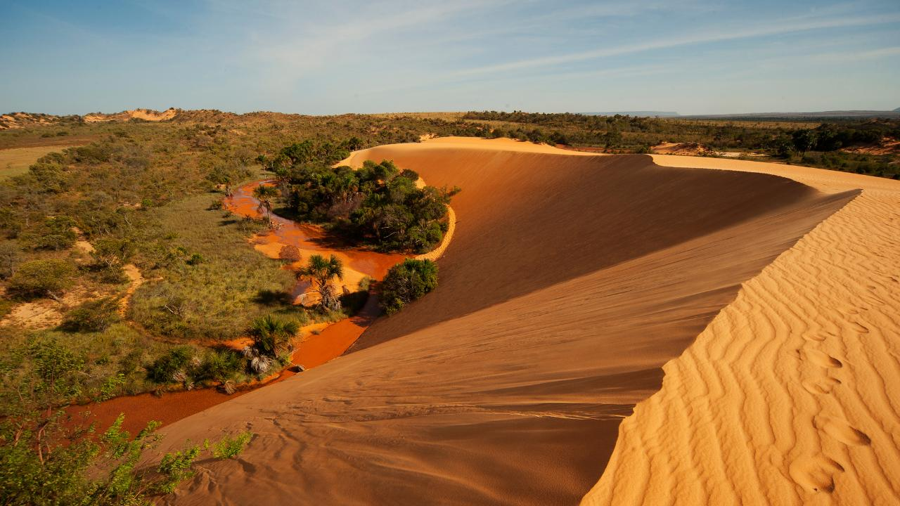
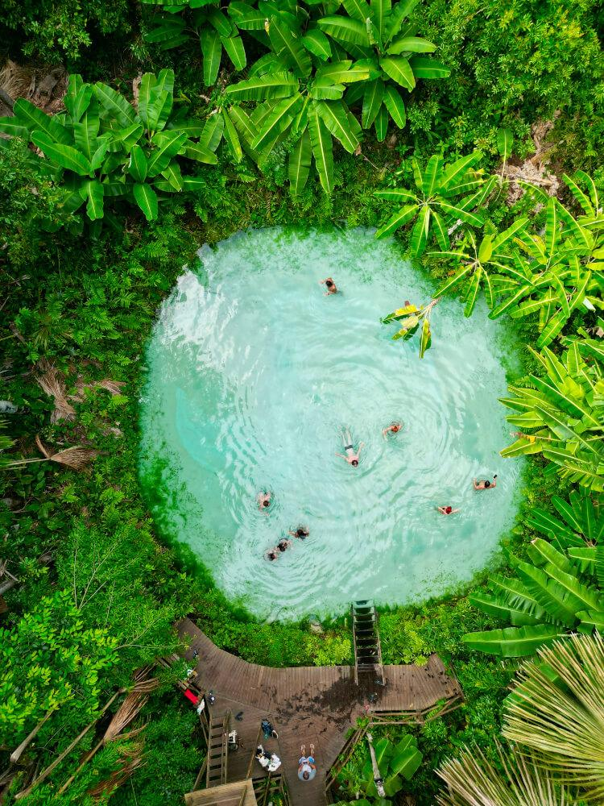

Galeria de Fotos



Minha Experiência
Conhecer Tocantins foi uma aventura inesquecível. As paisagens naturais impressionam pela beleza e tranquilidade, sendo um ótimo destino para quem gosta de ecoturismo.
Pontos Turísticos
- Jalapão
- Fervedouros
- Cachoeira da Velha